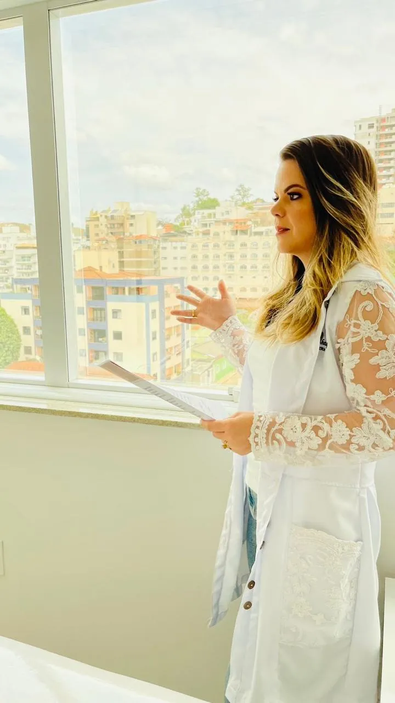
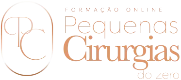
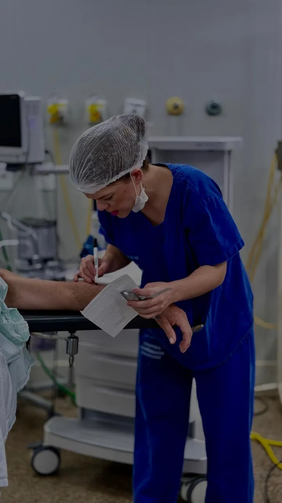
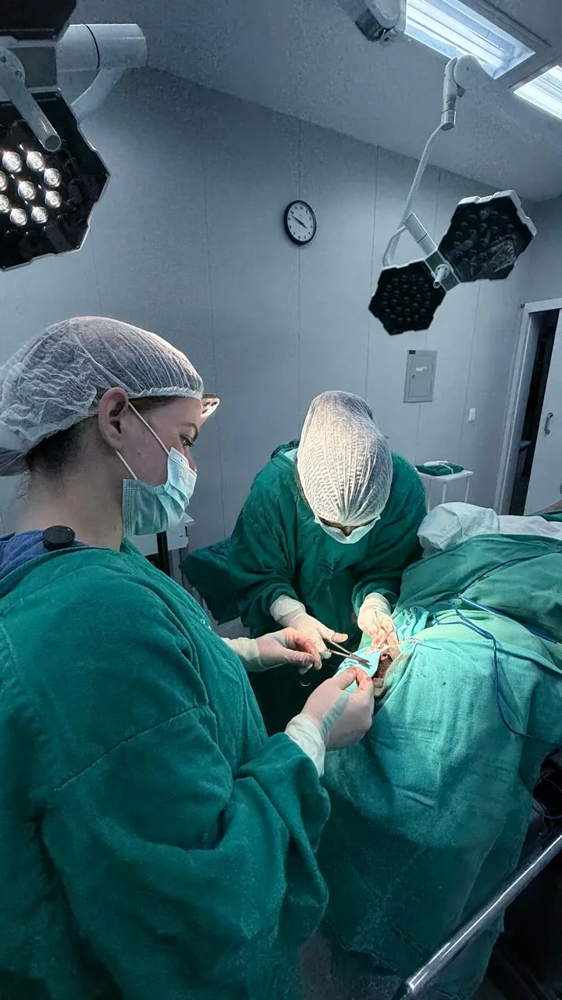
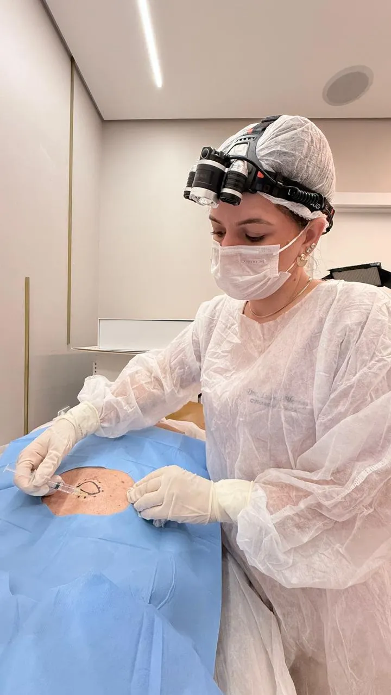
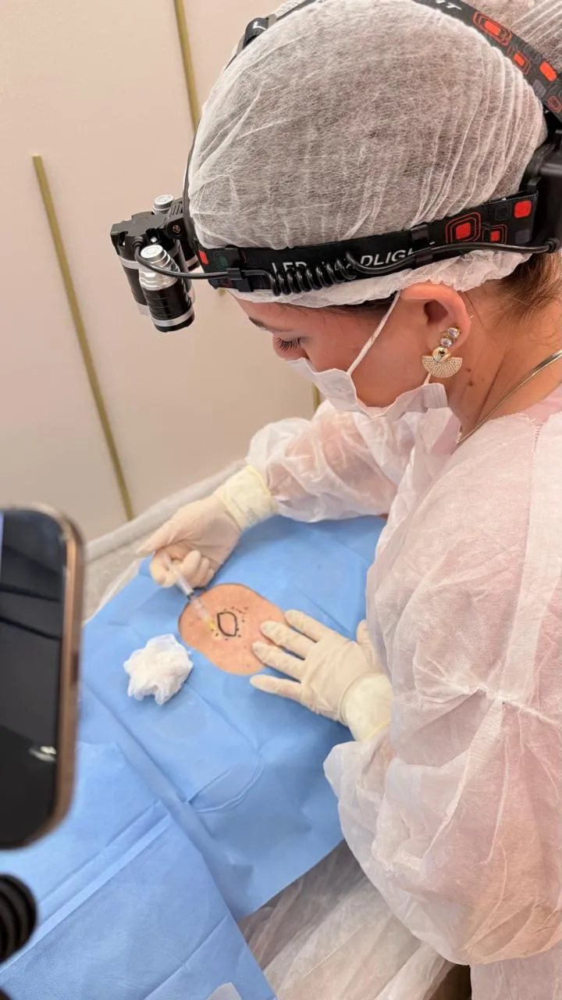
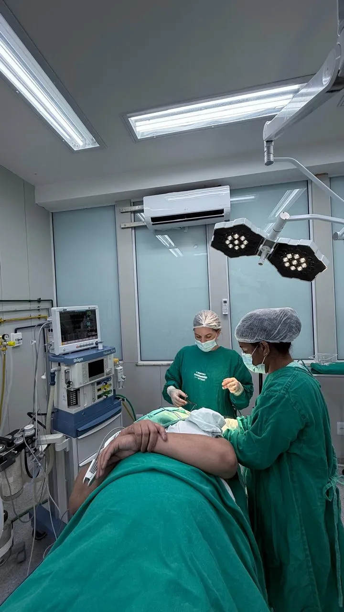
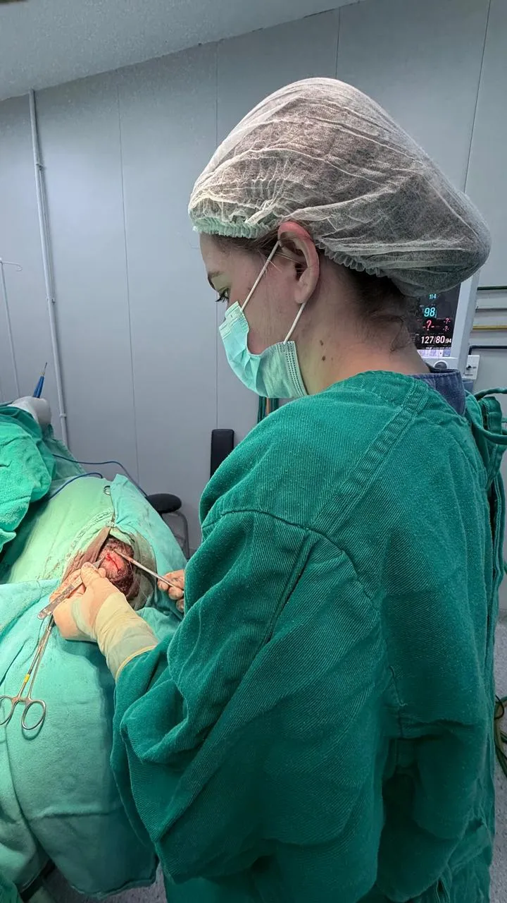
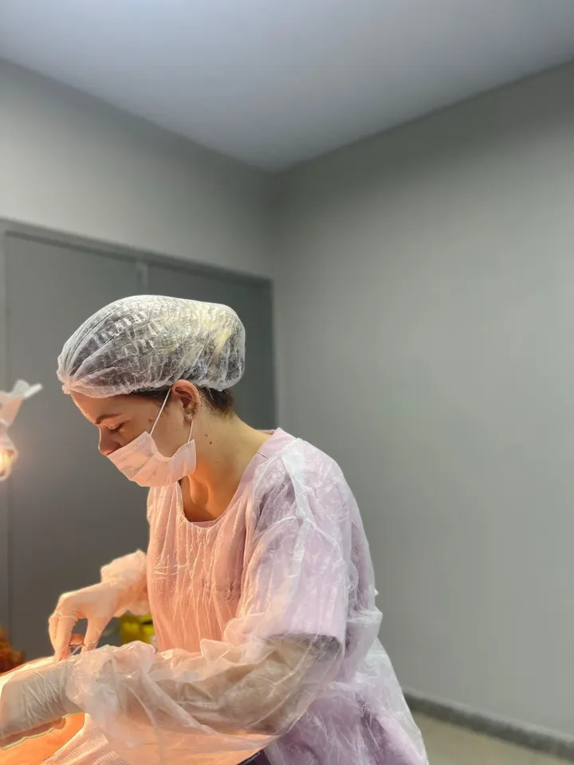
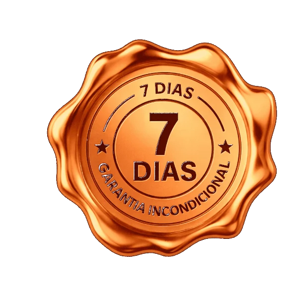

ESTUDE
Construa primeiro o conhecimento e o raciocínio necessários para entender o que você está fazendo, e por quê.

Estude a teoria, entenda a técnica, assista aos procedimentos quantas vezes precisar durante seu tempo de acesso, e depois aplique no paciente real presencialmente.
Escolha abaixo como deseja entrar nesta turma:
ATENÇÃO: APENAS 5 VAGAS PARA A FORMAÇÃO PRESENCIAL
Dra. Lulma Bhering | Cirurgiã Geral | CRMMG: 71176 | RQE: 50890
CONHEÇA O MÉTODO “ETA”:
Ter centenas de aulas disponíveis não significa saber o que estudar primeiro. E assistir a uma técnica não significa estar preparado para aplicá-la.
Por isso, a Formação foi organizada em torno de três etapas:

Construa primeiro o conhecimento e o raciocínio necessários para entender o que você está fazendo, e por quê.

Desenvolva as habilidades que podem e devem ser treinadas antes de chegar ao paciente.

Evolua progressivamente para a prática, respeitando seu preparo, sua competência e a complexidade de cada caso.
Segurança não vem apenas de assistir. E também não vem simplesmente “meter a mão”. Existe um caminho entre essas duas coisas.
Esse é o caminho da minha metodologia “ETA”.
AO ENTRAR NA FORMAÇÃO ON-LINE, VOCÊ RECEBE 1 MÓDULO POR SEMANA, assim você consegue passar por toda a metodologia “ETA”.
Você terá acesso a um conjunto de formações para acompanhar diferentes etapas da sua evolução nas Pequenas Cirurgias.
Minha formação completa, on-line e principal em Pequenas Cirurgias, reconhecida pelo MEC, e com mais de 250 aulas para construir seu conhecimento em Pequenas Cirurgias.
VER GRADE COMPLETA DA FORMAÇÃOAperte o botão abaixo e veja alguns trechos reais das aulas, conheça a metodologia e entenda como será sua experiência de aprendizado dentro da Formação On-line Pequenas Cirurgias do Zero.
QUERO CONHECER A FORMAÇÃO POR DENTROA Academia foi criada para o médico que quer continuar avançando. Aqui conseguimos aprofundar casos, raciocínios e técnicas mais complexas, incluindo conteúdos como:
Formação entrega de forma on-line e ao vivo todo mês. Todo o acervo já gravado fica liberado no seu acesso.
VER GRADE DA ACADEMIA AVANÇADA
Aprenda a identificar a lesão antes de operar: cada afecção tem sua aula de reconhecimento e a apostila complementar, dos quadros benignos mais comuns aos padrões de lesões malignas.
São mais de 30 aulas construídas a partir dos padrões que mais se repetiram na minha própria prática.
Planejamento começa no reconhecimento.
VER A GRADE COMPLETA
EXPERIÊNCIA PRESENCIAL:


Serão dois dias de mão na massa aqui comigo, com diversos casos de Pequenas Cirurgias.
Turma extremamente pequena (APENAS 5 ALUNOS). Justamente para proporcionar uma experiência realmente prática aos participantes, sem tumulto, com ênfase total no seu aprendizado.
Serão 20 pacientes ao longo dos dois dias (16 horas totais).
Em CADA procedimento, NO MÍNIMO 2 alunos entram em campo comigo, em sistema de rodízio.
Como a turma tem apenas 5 alunos, cada aluno participa de no MÍNIMO 8 procedimentos ao longo da Formação Presencial.

E se você ainda recebesse mais alguns presentes? Sim, não há nada tão bom que não possa melhorar!
SE VOCÊ FOSSE INVESTIR SEPARADO EM CADA UMA DESSAS FORMAÇÕES ON-LINE + OS BÔNUS, DARIA UM TOTAL DE:
R$8.587E SE FOSSE INVESTIR SEPARADO NA FORMAÇÃO PRESENCIAL SERIA:
R$16.900Em um treinamento presencial de dois dias, existe um limite para a quantidade de conteúdo que você consegue absorver.
Por isso, quem escolhe a Formação Presencial também recebe toda a Formação On-line reconhecida pelo MEC.
Antes do encontro, você pode estudar. Depois do encontro, pode voltar às aulas.
Pode rever uma técnica. Reassistir a um procedimento. Consultar materiais. E continuar aprofundando aquilo que praticou presencialmente.
O on-line constrói a base e permite revisão.
O presencial acrescenta a experiência prática no paciente real.
De: R$8.587
Por:
12x de R$578,86ou R$5.597 à vista.
Menos que o valor de 6 plantões.
ATENÇÃO: Turma limitada a apenas 5 médicos.
De: R$23.487
Por:
12 x de R$ 1.541,00 *Ou R$ 14.900,00 à vista
Você pode entrar apenas para a Formação On-line e construir seu caminho através do método ETA, onde disponibilizo mais de 250 aulas. O presencial é uma oportunidade adicional para quem PRECISA APLICAR NO PACIENTE REAL FISICAMENTE.
E quem é aluno do on-line tem prioridade na vaga do presencial, e ainda tem uma condição mais acessível, ou seja, no futuro você pode se matricular.

Você está fazendo uma compra on-line e poderá exercer o direito de arrependimento no prazo legal de 7 dias, nos termos aplicáveis do artigo 49 do Código de Defesa do Consumidor.
Dentro desse período, caso decida que a contratação não faz sentido para você, poderá solicitar o seu reembolso do valor total investido.
SEU RISCO É ZERO.A minha aluna Adriana entrou JUSTAMENTE POR SER ON-LINE.
Assim ela conseguiu estudar de qualquer lugar e a hora que quisesse, veja só:
Muitos médicos têm a rotina puxada, assim como a minha aluna Adriana.
Ela faz pós, é preceptora de residência, tem poucas horas de folga na semana e conseguiu concluir a Formação on-line com mais de 250 aulas, olha só a rotina dela:
Será que investir na Formação On-line Pequenas Cirurgias do Zero, reconhecida pelo MEC, e a mais outras 3 formações, compensa?
A minha aluna Nellifer vai responder esta dúvida:
Eu sei que você tem uma rotina intensa e pouco tempo para se dedicar a cursos longos. Por isso, somente nesta turma você terá 3 anos de acesso, permitindo estudar no seu ritmo. Ou seja, se você não entrar desta vez, pode perder este tempo de acesso, pois o tempo normal de acesso da formação é de 1 ano.
Sim, qualquer médico com CRM ativo, com ou sem especialidade pode realizar Pequenas Cirurgias. As Pequenas Cirurgias são de competência de qualquer médico com o preparo técnico adequado. A Formação completa em Pequenas Cirurgias foi pensada para quem está começando do zero e também para quem já está mais avançado. Ela resolve problemas independente do estágio da sua carreira, para que você não precise de mais nenhuma formação na área.
Se você tem a insegurança quanto à credibilidade e validação profissional, a Formação tem o reconhecimento pelo MEC, com ementa e estrutura formalizada. Não é um curso amador — é uma formação estruturada, com respaldo acadêmico e metodologia própria.
Se você acha que a Formação é básica ou redundante, lá eu ensino métodos avançados de sutura, anestesia e fechamento estético, além de gestão e marketing, conteúdos muito além da técnica. Você não precisa começar do zero, mas pode chegar muito mais longe.
Se você tem insegurança para executar os procedimentos, lá dentro da Formação eu mostro no paciente real que é possível fazer diversas Pequenas Cirurgias estando sozinho. Fora isso, eu te dou suporte individual e encontros mensais ao vivo para tirar dúvidas.
Se você acha que é necessário ter uma clínica equipada para iniciar, na Formação eu ensino como começar com estrutura mínima e ampliar conforme o retorno financeiro. Lá eu te mostro tudo sobre materiais e alternativas com custo mais acessíveis para começar. Você pode começar pequeno, desde que saiba exatamente o que está fazendo.
A procura por atendimentos resolutivos aumentou muito nos últimos anos, especialmente porque o SUS e os convênios têm filas longas e pagam mal. Isso faz com que pacientes busquem médicos particulares para resolver lesões simples. A maioria dos médicos não faz pequenas cirurgias, mesmo podendo legalmente fazer. Resultado: o paciente precisa procurar outro profissional. Há mais demanda do que oferta de médicos preparados tecnicamente.
Vou te dar um exemplo de como é a minha rotina nas Pequenas Cirurgias aqui na minha região. Bom, um plantão de 12 horas aqui em média é R$1.200, e uma pequena cirurgia que eu faço no mês inteiro, eu já consigo tirar isso, só que em uma média de 2 horas, ao invés de 12. E isso também vale para as clínicas populares, pro sus e para os convênios. Por mais que a remuneração nesses vínculos seja mais baixa, mesmo assim eu consigo tirar o mesmo valor de um plantão em menos de 12 horas. Estou me baseando aqui na minha região que é interior de minas, mas esses valores são muito superiores em grandes centros. Sem contar a liberdade e autonomia que tudo isso vai te proporcionar. Então está aí uma grande oportunidade de mercado para você.
Você tem a opção da formação presencial também. Mas aqui vamos muito além. Estude a teoria, entenda a técnica, assista aos procedimentos quantas vezes precisar durante seu tempo de acesso, e depois aplique no paciente real de forma presencial.
Você está fazendo uma compra on-line e poderá exercer o direito de arrependimento no prazo legal de 7 dias, nos termos aplicáveis do artigo 49 do Código de Defesa do Consumidor.
Dentro desse período, caso decida que a contratação não faz sentido para você, poderá solicitar o seu reembolso do valor total investido. SEU RISCO É ZERO.
Não, a nossa formação se enquadra em Extensão Universitária, de acordo com as regras do MEC.

Olá, sou a Dra. Lulma Neves Bhering, formada pela Universidade Federal de Juiz de Fora (UFJF) em 2016 e com residência em Cirurgia Geral pelo Hospital Regional João Penido (Fhemig). Após anos conciliando cirurgia com medicina intensiva e emergências, encontrei nas Pequenas Cirurgias uma forma de alavancar minha carreira.
Com mais de 3.000 Pequenas Cirurgias realizadas (e contando!) e quase 10 anos de experiência, transformei minha carreira em um verdadeiro laboratório de sucesso. Hoje, minha maior renda na medicina vem das Pequenas Cirurgias e me dedico a capacitar médicos como você a dominarem esta área e alcançarem uma nova realidade profissional.
Como criadora do Treinamento Completo de Pequenas Cirurgias, desenvolvi um método único que não apenas ensina técnicas cirúrgicas, mas oferece um caminho completo para o sucesso nesta especialidade. Atualmente sou professora na faculdade de medicina na disciplina de Urgência e Emergência, onde também ensino procedimentos cirúrgicos no contexto hospitalar da urgência.
Estou aqui para guiá-lo em cada passo dessa jornada transformadora.
Confie apenas em nossos números oficiais:
Escolha abaixo como deseja entrar nesta turma:
ATENÇÃO: APENAS 5 VAGAS PARA A FORMAÇÃO PRESENCIAL
Dra. Lulma Bhering | Cirurgiã Geral | CRMMG: 71176 | RQE: 50890